Examples of successes!
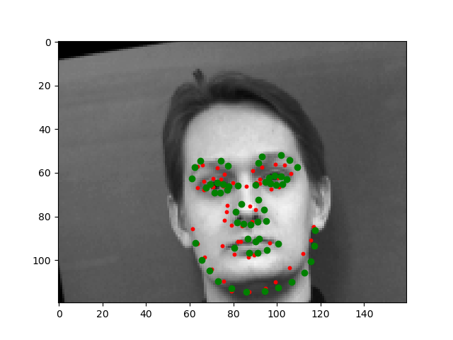 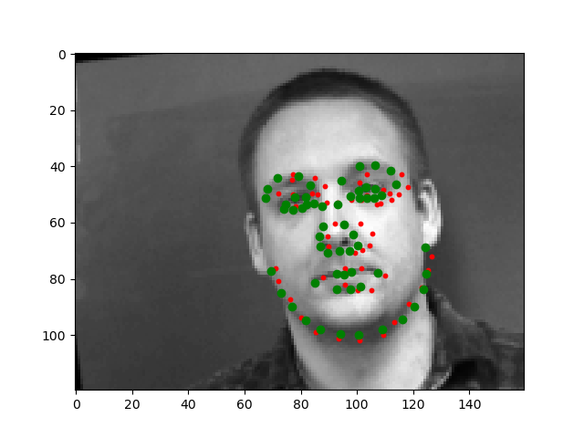 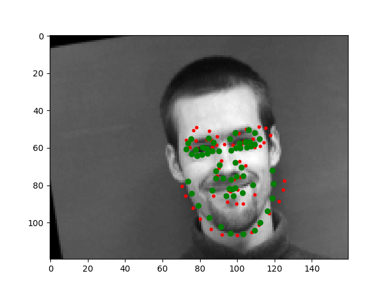
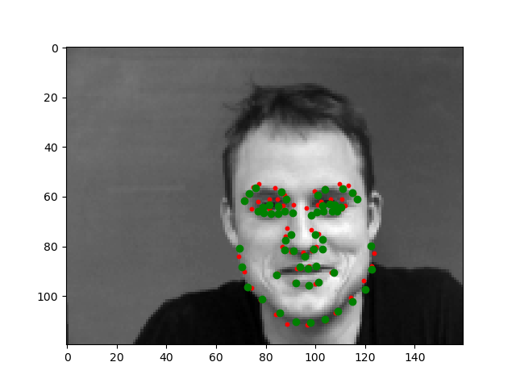
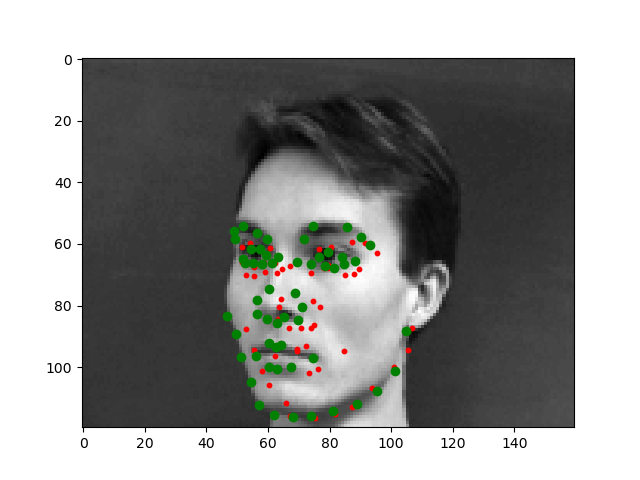
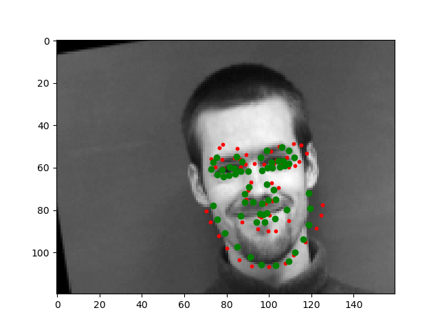
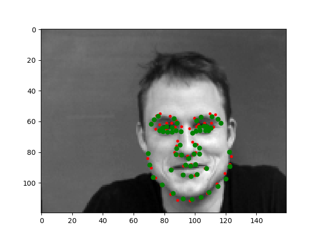
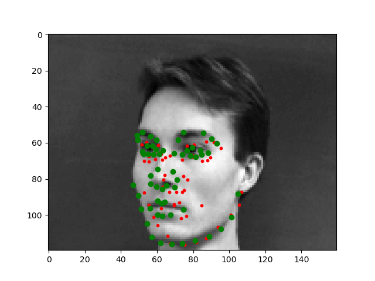
Plotted below are the training and validation accuracy trend lines for a total of 25 epochs with a learning rate of 1e-3 and batch size of 4. Blue is the training loss & orange is the loss on testing data.
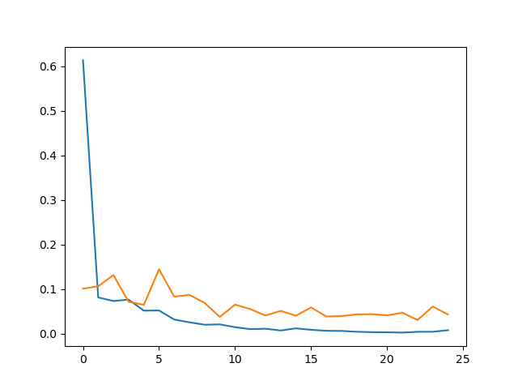If we take a closer look at the failure photos, we can see that our prediction is detecting a point where the pattern at that position resembles that of a nose. For example with the woman, the dimples in her smile create a similar pattern to that of a nose, and the last man's eyebags also has a similar pattern to that of a nose as well. Thus I believe that the filter in the first layer which is trained to recognize the pixel composition of a nose is mistaking these other features on the face for that of a nose.
For Data Augmentation, I incorporated random changes in brightness, saturation, randomly cropping my image within a specified window, and randomly rotating it from -15 to 15 degrees. Below are some examples.
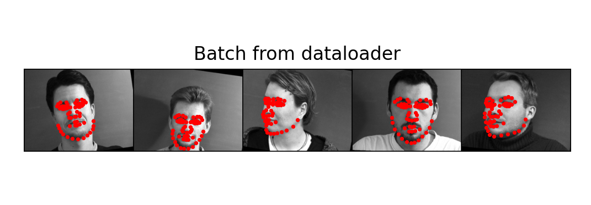For task two I actually forewent the advice and stayed with 4 thicc convolutional layers instead of 5-6. After tons of experimentation, I got far better results with 4 layers and I hypothesizoe it is because my image size is still relatively small. I chose to pass in image sizes of 160x120.
Convolutional layer1: I had a 20 channel 5x5 convolutional layer followed by a relu and a maxpool.
Convolutional layer2: Another 20 channel 5x5x20 convolutional layer followed by a relu and a maxpool.
Convolutional layer3: A 40 channel 5x5x20 convolutional layer followed by a relu and a maxpool
layer4: a 60 channel 3x3x40 convolutional layer straight into the fully connected layers.
Fully connected layer 1: a 640x7560 matrix followed by a relu.
Fully connected layer 2: a 116x640 matrix.
As we can see, instead of limiting my channel size to 12-28, I actually increased it to about 40 for the last two layers and got far better results. When I was experimenting with the 5-layered CNN with 12-28 channel sizes, my predictions tended to be more of an average of the facial poisitions.
Once again, using a learning rate of 1e-3 and batch size of 4.
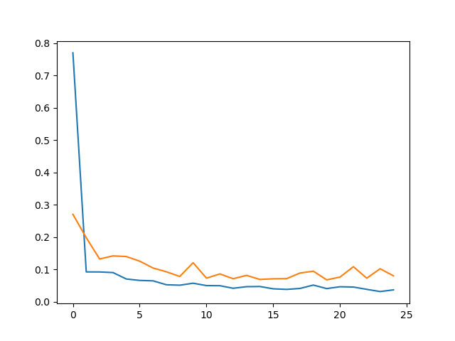
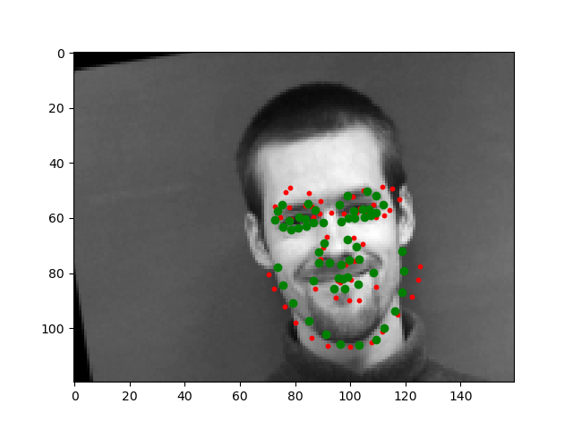
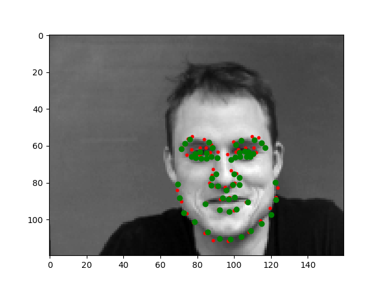
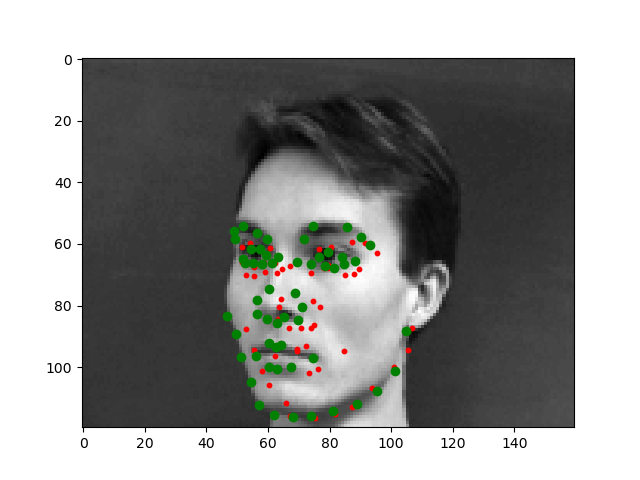
As seen above my model is able to account for faces that are rotated, but not so much faces where they face strongly in a single direction. As seen by the bottom examples, the model has trouble identifying the orientation of the face.
Since there did not exist a validation dataset, I was not able to obtain a validation training loss line. Please ignore the orange line. And as above, my training rate was 1e-3 and the batch size I used was 4.
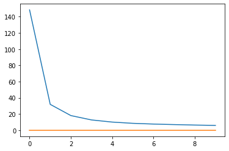I opted to use resnet18, which is 18 layers deep and has the special property of adding the "residual" of the image between every layer. I changed the input channel size and output channel size to adhere to our specific data.
 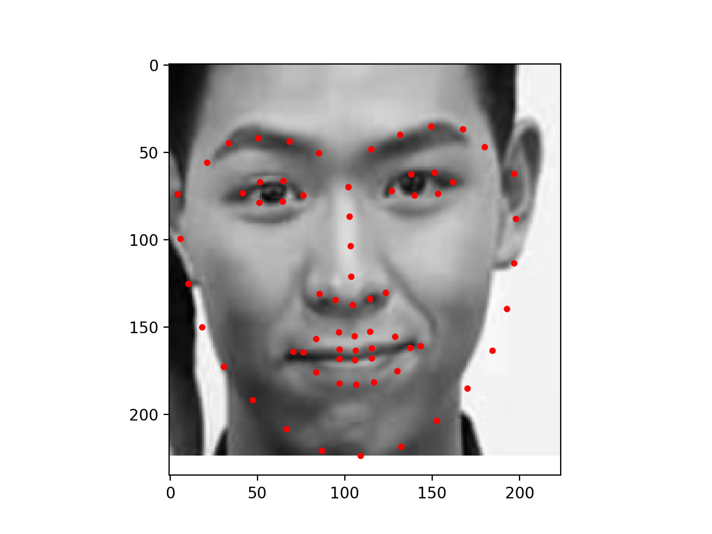
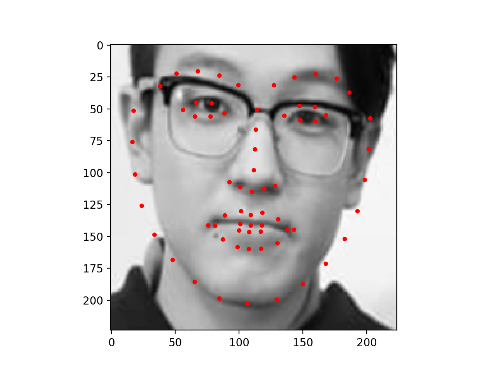
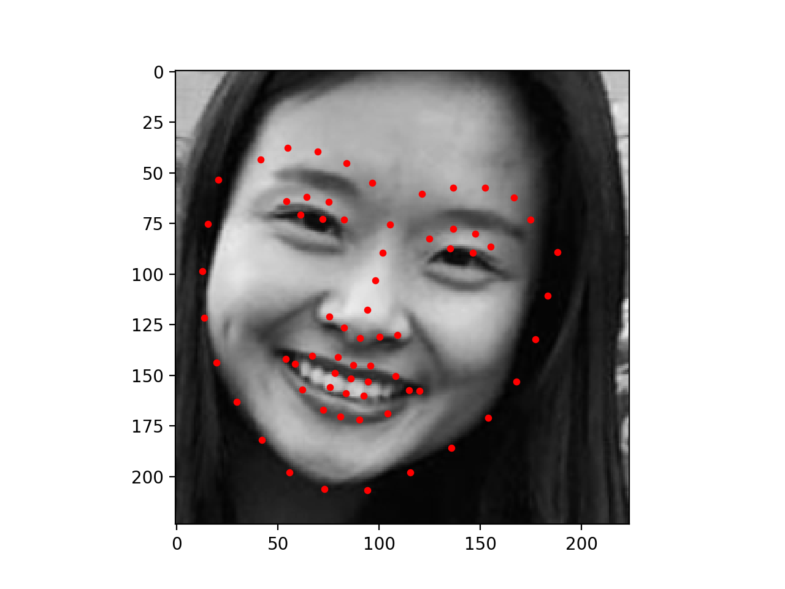
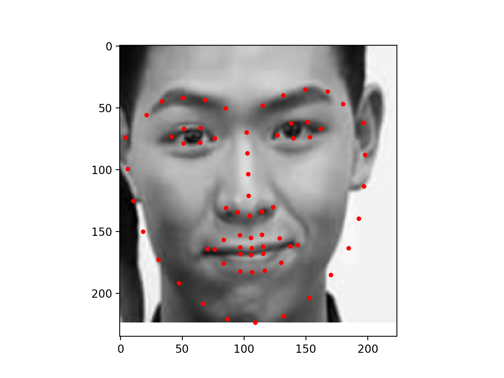
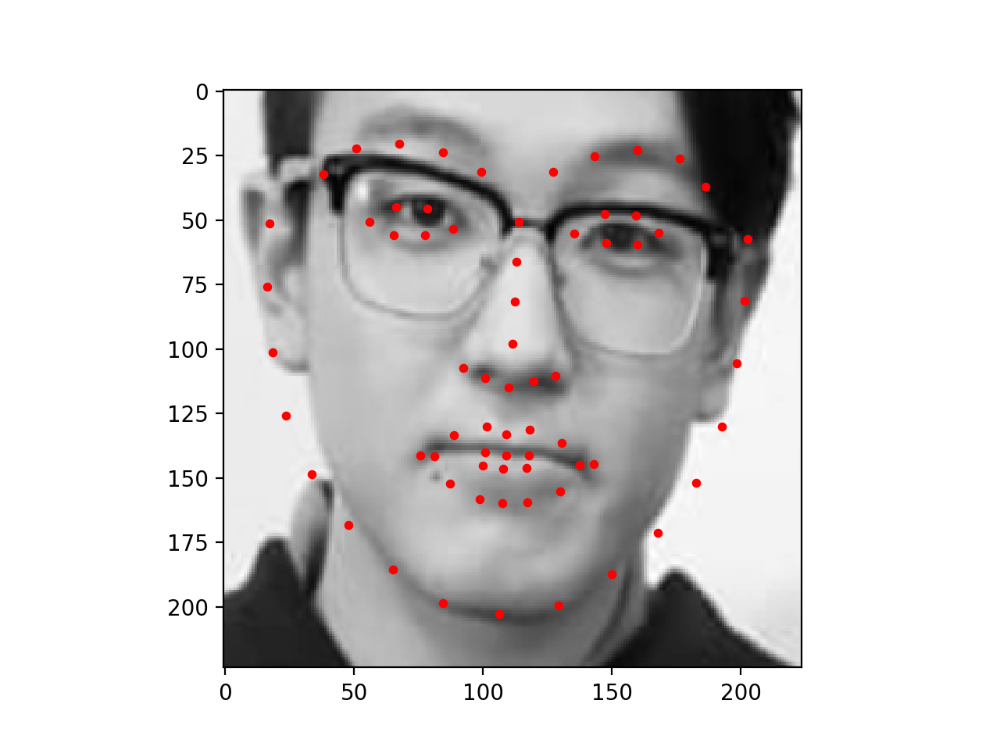
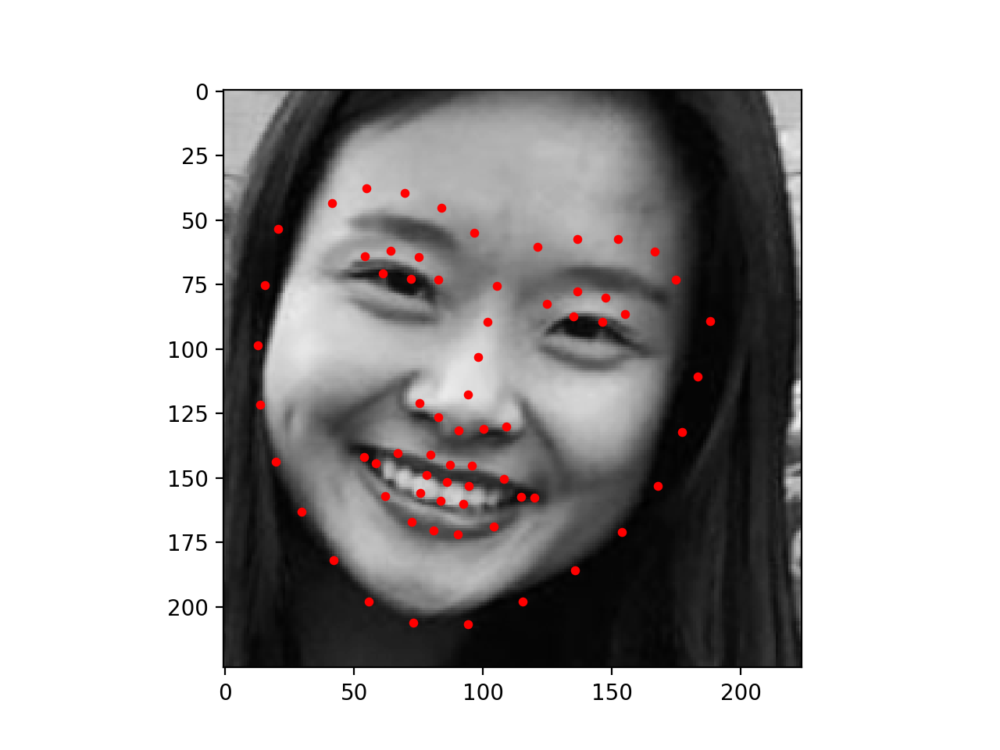